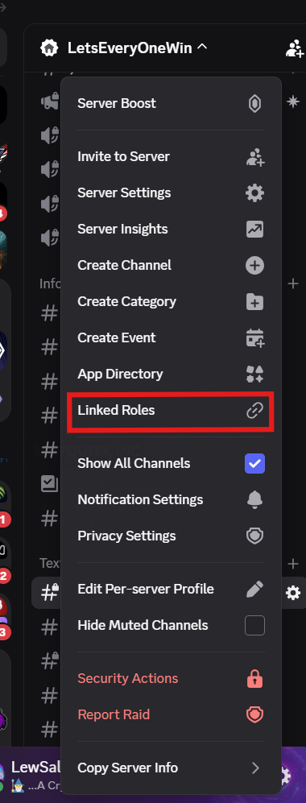
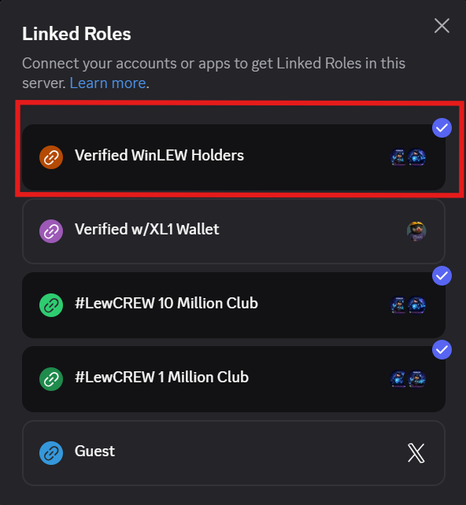

Governance
Your vote, verified and counted.
Verified $WinLEW holders get a structured, server-verified voice in community, feature, reward, and burn-program decisions — not a decorative poll, and not a claim that a vote moves funds by itself.
What is this page?
Execution boundaries — read this first
A vote here is a structured expression of community preference. It does not itself move treasury funds, execute a token burn, or trigger any on-chain transaction. Every category is labeled with its governance mode (advisory / community-approved / maintainer-ratified / binding-within-defined-policy), and every sensitive action — burns, treasury allocation — remains a separately authorized, manually executed step after a passed vote, with public evidence recorded once it happens. See Rules & documentation below for the full rules and the Burn Center for the same execution boundary already enforced there.
Live status
Have an idea?
Anyone with a verified wallet can submit a proposal idea for maintainer review. Submitting is not publishing — it creates a reviewable draft only; nothing here can schedule or activate a vote by itself.
Proposals
Voting eligibility
Checked server-side every time — never trusted from the browser. Default rule for Governance v1:
- Signed in with the shared WinLEW session (same login as Dashboard/Quiz/Faucet).
- A verified, linked Solana wallet (the same verification the Dashboard already shows).
- That wallet holds at least 1 WinLEW. Verifying is what earns your vote — that was the original intent, and it is the intent again.
- Buying extra weight on top of that free vote is separate, and needs at least 1,000,000 WinLEW held. The 1,000,000 bar set on 2026-07-17 was not dropped; it moved from deciding whether you have a voice to deciding whether you can amplify one. Purchased weight is paid for with governance contributions and stays capped, so no holder can buy their way past the ceiling.
- One verified wallet = one free vote, plus an optional paid vote-weight boost (see "Adding vote weight" below) — no free-form token-weighting. Since v1.1, your eligibility for a specific proposal is locked in the first time it's checked at or after that proposal's snapshot boundary — later balance changes don't change it. This is not a full historical chain snapshot; see the rules doc for exactly what it does and doesn't guarantee.
Verified holders also get a Verified WinLEW Holders Discord role and access to the private #governance channel where proposals are discussed before a vote opens — a recognition signal and a place to talk, not the vote-eligibility check itself (that's always the live balance rule above).
Adding vote weight
Your free vote as a verified holder always counts. On top of that, anyone can add weight to their vote on a specific open proposal — roughly $1 per additional vote, capped at 10 per proposal — by sending WinLEW through Contribute's "Governance Vote Weight" option.
- Priced off a 3-day trailing average, not the current spot price — a brief price spike (buy heavily, vote while it's pumped, sell after) has limited effect on a 72-hour average, which is what actually keeps this from being cheaply gameable.
- Every payment is a real, independently re-verified on-chain transfer through the same Contribute flow used for Dev/Faucet/Burn — never a self-reported amount.
- Weight from one proposal can't be double-counted on another — paying for weight allocates that specific amount to that specific proposal.
- Quorum (whether enough people showed up to vote at all) is still based on the number of distinct wallets that voted, regardless of weight — a low-turnout vote can't pass just because one wallet bought the maximum.
winlew.sol — the same address that already funds the X (Twitter) Faucet program. That's deliberate, not a shortcut: proceeds from governance participation flow directly into an existing, already-transparent reserve that pays out real community rewards (with the option to top up the Discord faucet from it too), rather than creating another address holders have to separately track on Transparency. Participating in governance and funding the faucet become the same action.
How to unlock voting
Voting eligibility reuses the exact same Discord-verified wallet link the Dashboard and every holder-tier role already use — there is no separate governance-only verification step.
- In Discord, type
/mole link(either bot works) and follow the link it gives you — or skip straight there from the website with the button below. - Verify your wallet on the website at /verify/ — sign a message with your wallet to prove ownership (no private key or seed phrase is ever entered anywhere).
- Your Discord roles (including Verified WinLEW Holders and access to #governance) are applied automatically the moment verification completes — nothing else to click. Server Settings → Linked Roles is just where you can go to see it; it's not a separate step you need to perform.


Governance eligibility checks your linked wallet's live balance directly — it does not read your Discord role. The role is a recognition badge and your #governance channel key; the vote itself is checked on-chain every time.
Governance process
- Draft & review — a proposal is drafted and reviewed for completeness/safety.
- Discussion — opened in Discord for community discussion before any vote.
- Active voting — a defined window; eligible holders cast (and may update) a vote.
- Result — quorum and approval threshold are checked automatically, publicly.
- Maintainer safety review — a passed vote is reviewed before anything is approved for execution.
- Execution (if applicable) — a separate, manually authorized action, with public evidence recorded here afterward.
Categories
You can do all of this from Discord
The same proposals, the same eligibility check, the same record — governance is not website-only:
/mole proposals— list proposals with live results/mole vote— cast or update your vote on an open proposal/mole myvote— privately check your current vote/mole votes— your Governance Vote Fund total and purchased vote weight/mole propose— submit a proposal for maintainer review
Voting from Discord is checked server-side exactly as it is here, and your individual choice stays private on both.
Rules & documentation
Full governance rules — eligibility, vote privacy, weighting method, quorum, approval thresholds, execution boundaries and known limitations: Governance rules →
Every field a real proposal carries, and the rule each one satisfies: Proposal template →
Both are published here rather than linked off-site, so the rules are readable by anyone the moment they are cited.